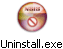

KO Approach ships with its own uninstaller program, Uninstall.exe, located in the same directory as KO Approach itself (for more information, see Files Installed on your Hard Disk).
To start the removal process, simply double-click the Uninstall.exe and follow the directions on the screen.
Note: You must have sufficient access rights for the computer from which KO Approach is being removed in order to run the Uninstaller.
The following topics explain the uninstallation process in detail: